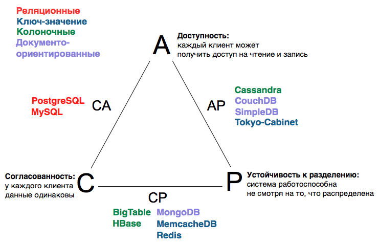
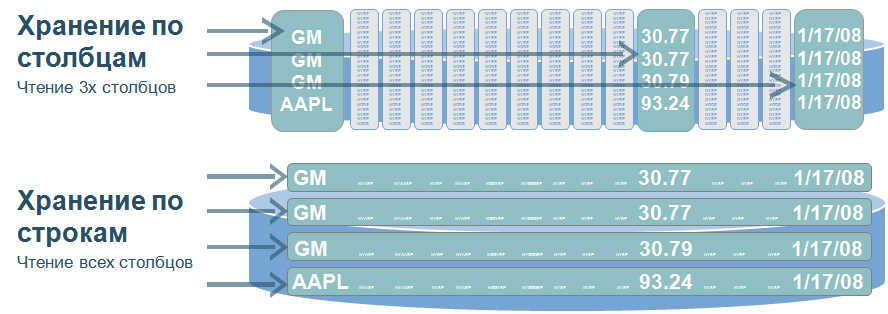
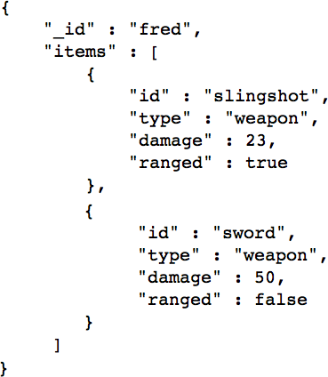

Обзор нереляционных хранилищ данных
MongoDB, Redis, BigTable
Александр Щапов, @darednaxella
Lviv.py#1
Требования к хранилищам данных сегодня
- много данных
- очень много данных
- огромное количество запросов
- доступность в любой момент времени
Реляционные СУБД
- строгая структура таблиц
- высокая согласованность данных
- ACID* требования к транзакционной системе
- проверены временем
Теорема CAP
В любой реализации распределённых вычислений возможно обеспечить не более двух из трёх следующих свойств:
- согласованность данных (consistency)
- доступность (availability)
- устойчивость к разделению (partition tolerance)
Теорема CAP

Not only SQL
- нет «классического» SQL
- нет строгой структуры
- представление в виде агрегатов (минимум JOIN'ов)
- хорошая горизонтальная масштабируемость
- высокая доступность
- cогласованность в пределах одного узла или «согласованность в конечном счете».
Кроме того:
- открытый код (сейчас 150 реализаций, согласно nosql-database.org)
Классификация NoSQL решений
- ключ-значение (key-value)
- колоночные (column)
- документо-ориентированные (document-oriented)
- графовые (graph)
- остальные:
- файловая система
- пространственные БД
Хранилища «ключ/значение»

- не требуют описания структуры
- можно хранить всю БД в оперативной памяти
- спроектированы с учётом требований к масштабируемости и работе с большим количеством данных
- как представлены: набор пар ключ-значение
Redis, LevelDB, MemcacheDB, Tokyo-Cabinet
Колоночные хранилища
Каждая строка в таблице может иметь значение в некоторых, но не обязательно во всех, столбцах.
Полные строки, как в реляционных БД:
[A1, B1, C1], [A2, B2, C2], [A3, B3, C3]… где A, B и С — это поля (столбцы), а 1,2 и 3 — номер записи (строки).
Колоночное представление:
[A1, A2, A3], [B1, B2, B3], [C1, C2, C3]…
BigTable, Cassandra, HBase
Документо-ориентированные БД
- как ключ-значение, но значением выступает документ или объект, например, JSON, BSON или XML, или же PDF, Microsoft Word документ.
- не требуют описания структуры
- можно использовать версионирование документов
MongoDB, CouchDB, SimpleDB, IBM Lotus Notes, Mnesia
Графовые базы данных

- элементы модели: узлы и связи
- моделирование социальных графов
Neo4j, GiraffeDB, GraphBase
Redis: remote dictionary server
- хранит БД в оперативной памяти, записывается на диск
- поддерживает строки, связанные списки, множества, хеш таблицы в качестве значений
- master/slave репликация
- есть библиотеки под все основные языки
- 100k операций чтения/записи в секунду
VMWare, Github, Stackoverflow, Craiglist, Flickr, ...
Redis в действии
$ redis-server [7269] 02 Dec 15:22:08 * Server started, Redis version 2.4.17 [7269] 02 Dec 15:22:08 * The server is now ready to accept connections on port 6379 $ redis-cli redis 127.0.0.1:6379> set hello world OK redis 127.0.0.1:6379> get hello "world" redis 127.0.0.1:6379> set user:21:email "hello@lohika.com" OK redis 127.0.0.1:6379> get user:21:email "hello@lohika.com"
SET/MSET, GET/MGET, GETSET, EXISTS, DEL, RENAME, EXPIRE, EXPIREAT, TTL, RANDOMKEY, INCR/INCRBY, DECR/DECRBY, MULTI..EXEC, L* (lists), S* (sets), H* (hashes), L/R-POP/PUSH (queues)
>>> import redis
>>> r = redis.StrictRedis(host='localhost', port=6379, db=0)
>>> r.set('foo', 'bar')
True
>>> r.get('foo')
'bar'
MongoDB: humongous
- представление: JSON документы, хранимые в BSON
- нет структуры таблиц
- гибкий язык запросов
- полная поддержка индексов
- масштабируемость: асинхронная репликация, шардинг
- MapReduce
- атомарность на уровне документа
- GridFS
- нет изоляции
- нет JOIN'ов
- есть библиотеки под все основные языки
Disney, EA, Bitly, Github, Foursquare, ...
MongoDB
- database → Database
- table → Collection
- row → Document
var mydoc = {
_id: ObjectId("5099803df3f4948bd2f98391"),
name: { first: "Alan", last: "Turing" },
birth: new Date('Jun 23, 1912'),
death: new Date('Jun 07, 1954'),
contribs: [ "Turing machine", "Turing test", "Turingery" ],
views : NumberLong(1250000)
}
MongoDB shell
$ mongod
all output going to: /usr/local/var/log/mongodb/mongo.log
$ mongo
MongoDB shell version: 2.2.0
connecting to: test
> show dbs
local (empty)
> use mydb
switched to db mydb
> j = { name : "mongo" };
{ "name" : "mongo" }
> t = { x : 3 };
{ "x" : 3 }
> db.things.save(j);
> db.things.save(t);
> db.things.find();
{ "_id" : ObjectId("50bf6a6bff797b3b4b688812"), "name" : "mongo" }
{ "_id" : ObjectId("50bf6a6eff797b3b4b688813"), "x" : 3 }
> show collections
system.indexes
things
MongoDB: INSERT, SELECT, UPDATE, DELETE
> db.users.insert({username: "Yet another mongo user", email: "mongofun@lohika.com", created_at: new Date(), age: 27})
> db.users.find({email: {$in: ["mongofun@lohika.com"]}})
> db.users.find({$or: [{username: "joe"}, {email: "joe@joe.com"}]})
> db.users.find({age: {$not: {$gt: 21}}})
> db.users.find({username: "Yet another mongo user"}, {created_at: true})
> db.users.count()
1
> db.users.distinct("age", {created_at: {$gt: new Date()}})
[...]
> db.collection.find({ field: /acme.*corp/i});
> db.collection.find({ location: {$near: [100, 100]}});
> db.collection.find({ points: {$size: 2}}).sort({name: 1});
> db.users.update({email: "mongofun@lohika.com"}, {$unset: {"username": ""},
$inc: {age: 1}})
> db.users.remove({})
MongoDB: map/reduce
{
_id: ObjectId("50a8240b927d5d8b5891743c"),
cust_id: "abc123",
ord_date: new Date("Oct 04, 2012"),
status: 'A',
price: 250,
items: [ { sku: "mmm", qty: 5, price: 2.5 },
{ sku: "nnn", qty: 5, price: 2.5 } ]
}
...
var map_func = function() {
emit(this.cust_id, this.price);
};
var reduce_func = function(keyCustId, valuesPrices) {
return Array.sum(valuesPrices);
};
db.orders.mapReduce(
map_func,
reduce_func,
{ out: "map_reduce_example" }
)
MongoDB: pymongo
>>> from pymongo import MongoClient
>>> connection = MongoClient()
>>> connection = MongoClient('localhost', 27017)
>>> db = connection.mydb
>>> post = {"author": "Mike",
... "text": "My first blog post!",
... "tags": ["mongodb", "python", "pymongo"],
... "date": datetime.datetime.utcnow()}
>>> posts = db.posts
>>> post_id = posts.insert(post)
>>> post_id
ObjectId('...')
>>> posts.find({"author": "Mike"})
{u'date': datetime.datetime(...), u'text': u'My first blog post!', ..
MongoDB: масштабирование

mongod— сервер и данныеmongos— роутерconfig server— хранит мета-данные о том, где искать
# connect to single server
db = connect("localhost:27017")
# connect to a router
db = connect("localhost:27017")
BigTable
- "Петабайт данных на тысячи машин"
- построена поверх Google File System (распределённая файловая система)
- не используется за пределами Google, но можно попробовать в GAE
- HBase -- BigTable для Hadoop
- Cassandra -- хранилище данных по модели BigTable для Facebook
BigTable
- представление данных: (row, column, timestamp) → string
- атомарные операции чтения-записи над строкой
- динамически добавляемые колонки
- версии строки по времени
- строки могут объединяться в Tablet'ы, колонки собираться в Families
- API
BigTable архитектура
- клиент
- Master сервер: организация Tablet'ов, балансировка нагрузки, сборка мусора, изменения в структуре таблиц
- Tablet сервера: обслуживают запросы на чтение и запись, добавляются и удаляются динамически, разделяются, если данных в наборе больше 100-200 Мб
- SSTable: хранилище данных
- Chubby: сервис отслеживания блокировок, ACL списки
Область применения NoSQL
- системы, где много данных, но можно пренебречь согласованностью
- веб-приложения
- социальные сети
- потоковое вещание видео и аудио контента
- ...
Выводы
- легко использовать
- но тяжело встраивать в готовые системы, где уже много завязано на реляционные данные
- слабые ACID требования → выше производительность
- «согласованность в конечном счете»
- нет структуры → сложнее поддержка
- ответственность за целостность данных лежит на приложении
- выбор в пользу NoSQL зависит от конкретной задачи
Что ещё почитать
- nosql-database.org
- «Ошибки в системах баз данных, согласованность "в конечном счете" и теорема CAP», Оригинал: Michael Stonebraker. Errors in Database Systems, Eventual Consistency, and the CAP Theorem. BLOG@CACM, April 5, 2010
- Bigtable: A Distributed Storage System for Structured Data (Google)
- NoSQL for Dummies, Tobias Ivarsson
- NoSQL Databases: Why, what and when by Lorenzo Alberton
- ключевые слова: NoSQL, ACID, CAP теорема, MongoDB, Redis, BigTable, etc.